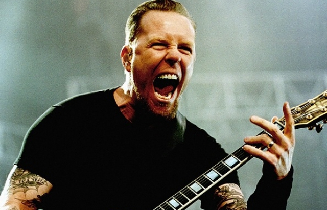

Биография

Дже́ймс А́лан Хэтфилд (англ. James Alan Hetfield; род. 3 августа 1963, Дауни, Калифорния США) — американский рок-музыкант, вокалист и гитарист метал-группы
Metallica. C 2011 года занимает 87-е место в списке величайших гитаристов всех времён по версии журнала Rolling Stone. У него есть своя манера держать медиатор тремя пальцами. Он обладает сильным, запоминающимся голосом и особой манерой общения с публикой. Несмотря на то, что Джеймс выступает в Metallica как ритм-гитарист, в некоторых песнях он исполняет и сольные партии гитары.
Музыкальная карьера
Музицировать Джеймс начал в 9 лет на фортепиано, затем играл на барабанах своего брата Дэйва, и, наконец, перешёл к гитаре. Его первой группой была любительская команда «Obsession». Группа состояла из братьев Veloz, которые играли на бас-гитаре и барабанах, и Джима Арнольда на гитаре.
Рон Макговни и Дейв Маррс сидели на чердаке гаража Veloz и щёлкали на пульте управления световыми эффектами. Группа играла известные композиции таких групп как
Black Sabbath и
Led Zeppelin. После распада Obsession Маррс, Хэтфилд и Макговни продолжали играть вместе.
После переезда в Ла Бреа, Джеймс поступил в школу Brea Olinda и встретился с барабанщиком Джимом Муллиганом. Вскоре появился Хью Таннер, и с ним они создали Phantom Lord. С Хью на соло-гитаре и Джимом на барабанах, Джеймс пел и играл на ритм-гитаре. Группа сменила несколько басистов до того момента, когда Джеймс окончил школу и уехал обратно в Дауни.
В Дауни Джеймс переехал в дом, принадлежащий родителям Рона Макговни, который должен был быть снесён из-за расширения скоростной автомагистрали. Этот дом был идеальным местом для Джеймса и Рона, чтобы собираться вместе, слушать и играть музыку. Джеймс уговорил Рона играть на бас-гитаре и даже обещал преподавать ему.
Третья группа Джеймса, Leather Charm, состояла из бывших членов Phantom Lord. Кроме Джеймса и Рона, в неё вошли Хью Таннер и Джим Муллиган. Группа Leather Charm была более удачной. Она играла свои песни и каверы, например, Quiet Riot Slick Black Cadillac и Remember Tomorrow Iron Maiden. Группа сумела сыграть в нескольких концертах и записала демо, но начала разваливаться. Первым покинул группу Таннер, и его заменил Трой Джеймс. Затем Муллиган ушёл в другую, более прогрессивную группу. В конечном счёте, группа Leather Charm развалилась.
Важнейшим событием в жизни Джеймса стала встреча с выходцем из Дании, барабанщиком
Ларсом Ульрихом. Вместе они основали группу Metallica.
Несчастные случаи
Джеймс Хетфилд знаменит несчастными случаями, происходившими с ним. Во время турне в поддержку альбома Master Of Puppets он сломал руку, катаясь на скейтборде. Тогда Джеймса впервые заменил, на тот момент сопровождающий группы, Джон Маршалл. Позже, в 1987 году, он сломал руку ещё раз, в результате чего была отложена запись альбома …And Justice for All, и отменено участие в нескольких шоу предстоящего тура Monsters of Rock’87. Впоследствии в контрактах Джеймса появился пункт «Никаких скейтбордов».
Но, возможно, самым известным является случай на совместном концерте с Guns N’ Roses в 1992 году на Олимпийском стадионе Монреаля. Во время исполнения песни «Fade to Black» Хэтфилд прошёл над пиротехническим оборудованием в тот момент, когда оно сработало. В результате Джеймс получил ожоги левой руки и лица второй и третьей степеней и был вынужден отказаться от игры на гитаре. Вместо ритм-гитариста на время тура был снова приглашен Джон Маршалл из Metal Church. Перед этим концертом пиротехники сообщили группе о том, что во время исполнения «Fade to Black» будут использованы новые спецэффекты: по краям сцены будет фейерверк. Однако пиротехники забыли предупредить, что старые спецэффекты также останутся. Будучи уверенным в том, что ранее заявленных спецэффектов не будет, Джеймс встал рядом с пиротехнической установкой, и столб пламени высотой 4 м обжёг его с левой стороны.
Ссылки
Metallica Вики
Официальный сайт Metallica
Английкая версия сайта
К началу страницы
Конец